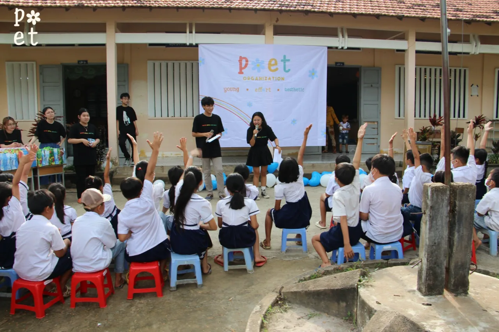
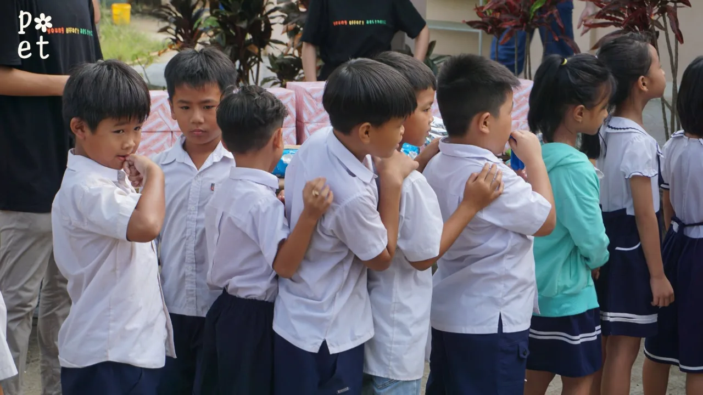
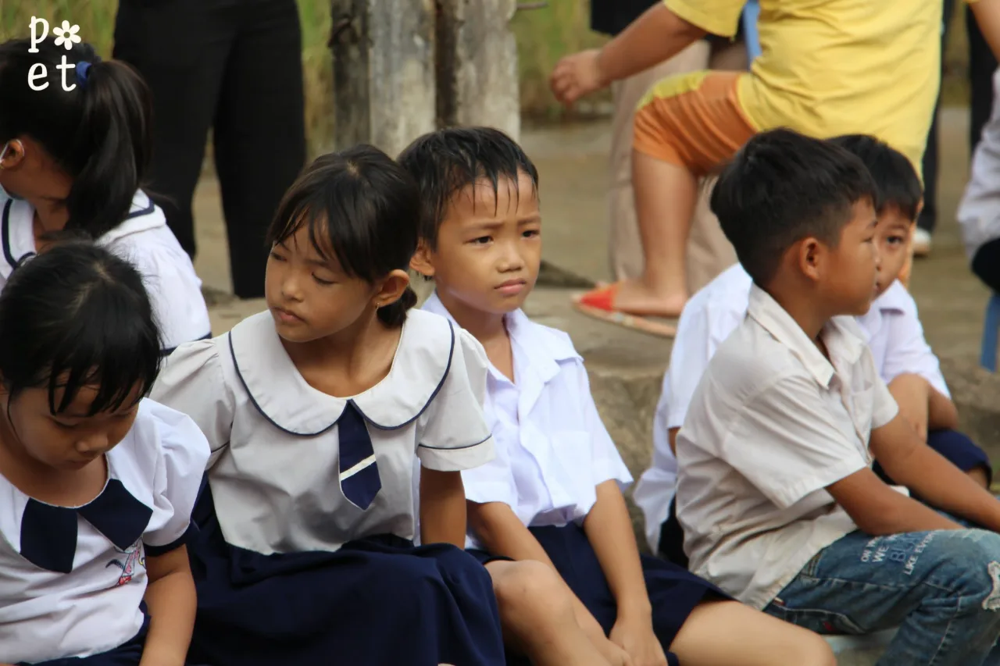
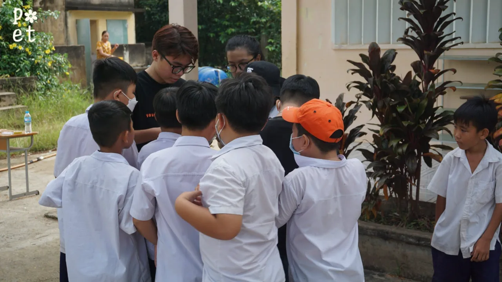
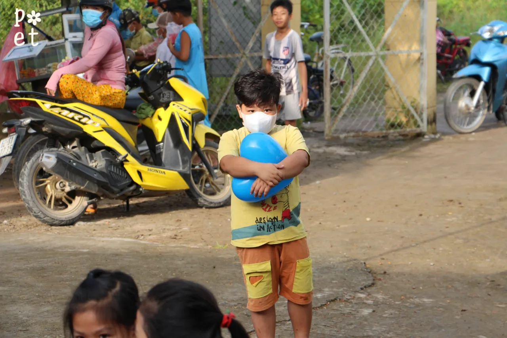
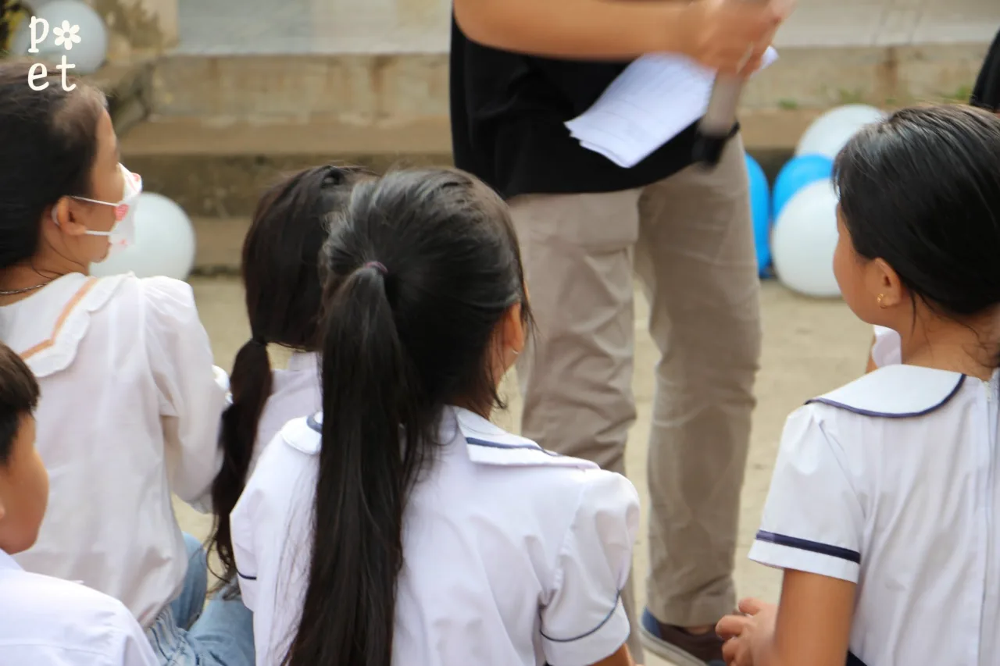
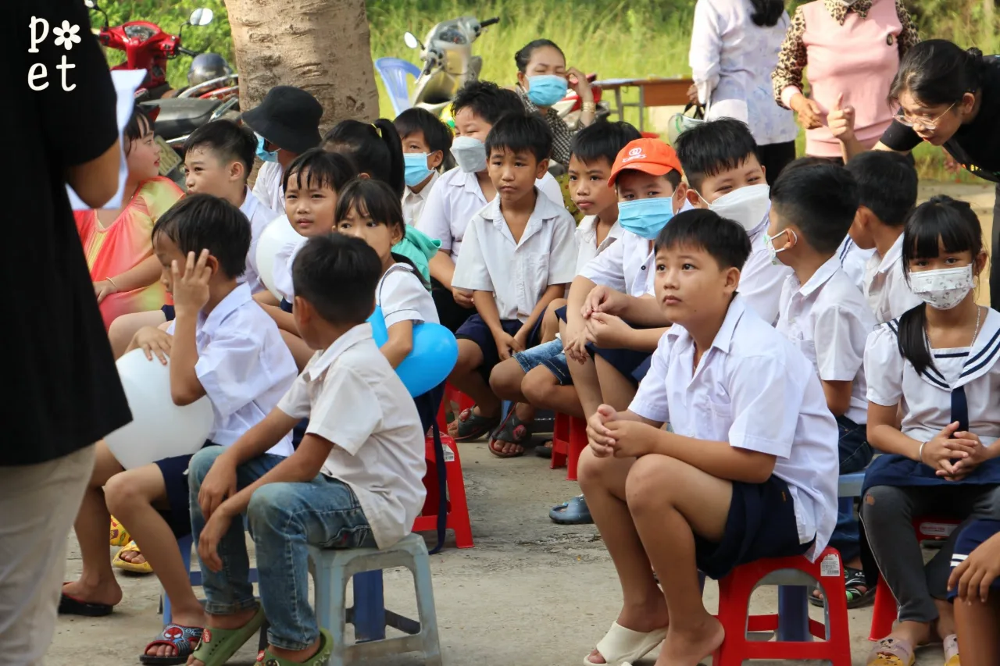
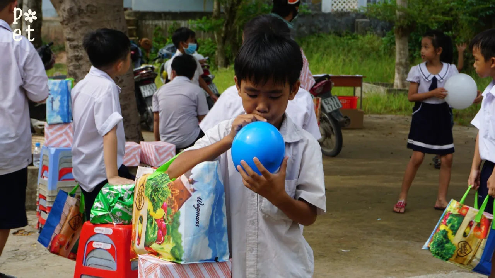

Chương trình thiện nguyện tại Trường Tiểu học Mỹ Thạnh Bắc
“Mùa Hè Yêu Thương”POET đã có cơ hội trao tặng 30 suất đồ dùng học tập, 10 suất học bổng, 5 xe đạp, 3 quạt treo tường và 3 tủ nhôm đựng tài liệu cho 3 lớp học tại điểm trường. Bên cạnh đó, POET còn tổ chức hoạt động vui chơi chạy trạm với chủ đề bảo vệ môi trường nhằm giúp đỡ các em học sinh có thêm những kiến thức bổ ích trong cuộc sống.
25 – 26.07.2022
Từ 25 – 26/07/2022, POET đã thành công tổ chức chặng cuối cùng của Dự án cải thiện điều kiện học tập của em ở trường tiểu học Mỹ Thạnh Bắc (Đức Huệ, Long An), mang tên “Mùa Hè Yêu Thương”.
Từ đâu có quỹ
Dự án được hiện thực hóa thông qua hai hình thức gây quỹ chính là 1. Dự án Quyên góp – “Thư viện bỏ hoang”, và 2. Đêm nhạc “Vết Nứt”, cùng với hiện kim từ nhà tài trợ chương trình.
Cùng thầy cô
Bên cạnh đó, những đóng góp thiết thực của tập thể giáo viên tại điểm trường tiểu học Mỹ Thạnh Bắc đã giúp POET 2022 hoàn thành tốt nhất những mục tiêu được đề ra.
Quà đến tay các em
Các vật phẩm được trao đến cho các em học sinh bao gồm:
- Sách vở và tập trắng
- Dụng cụ học tập (bút màu, thước kẻ,…)
- Tủ sách
- Học bổng và xe đạp dành cho các em có hoàn cảnh đặc biệt khó khăn
Chạy trạm
POET còn tổ chức hoạt động vui chơi chạy trạm với chủ đề bảo vệ môi trường nhằm giúp đỡ các em học sinh có thêm những kiến thức bổ ích trong cuộc sống.
Khoảnh khắc







